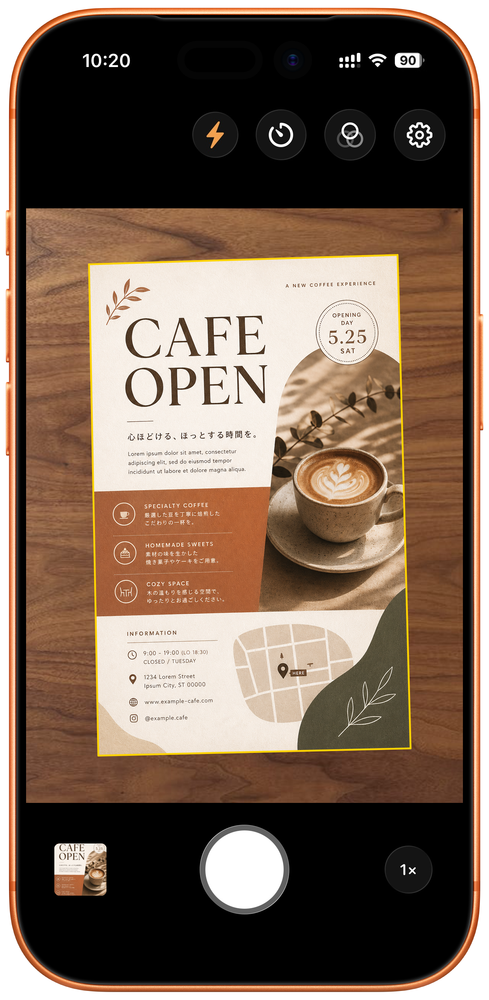

ドキュメントを自動認識
カメラを向けると書類の輪郭を検出。シャッターを押すだけで、トリミングと見やすい補正を行います。
PopScanは、iPhoneのカメラで書類や名刺、はがき、パンフレットをすばやくスキャンし、見やすく補正して写真ライブラリへ保存できるシンプルなカメラアプリです。

Everyday Scanner
いつでもすばやく使えるよう、「今ここにある紙をきれいに残す」ことを優先しました。カメラを開いて、撮って、確認して、保存。必要な操作だけに集中できます。
Features
カメラを向けると書類の輪郭を検出。シャッターを押すだけで、トリミングと見やすい補正を行います。
フラッシュ、自動タイマー、カラー・グレー・白黒・写真フィルター、保存画質をカメラ画面で選べます。
撮影後に回転、トリミング、フィルター、明るさ調整、削除ができます。自動補正後に必要なところだけ手直しできます。
保存ボタンを押すと、標準の写真ライブラリに保存。あとから共有、印刷、整理しやすい形で残せます。
標準カメラなどで撮った写真もPopScanで読み込み、トリミングや見やすい補正を行えます。
複雑な管理機能は入れず、書類、パンフレット、はがき、名刺をテンポよく残すための操作に絞っています。
Use Cases
Plans
日々のカジュアルな利用に
¥0
日常の中でカジュアルに使うのに十分な利用枠があります。徐々に利用枠が回復します。
スキャン利用枠を無制限に
¥650
スキャンする書類が多い方は、買い切りの無制限プランをご利用ください。開発を支えていただくことにもつながります。
Privacy Policy
PopScanで撮影・保存する写真、画像処理、解析結果は、原則として端末内で処理されます。これらの画像データや解析結果を当社サーバーへ送信することはありません。
利用枠の判定を正確に行うため、オンライン時に juno.tokyo の日時確認用エンドポイントへ通信する場合があります。この通信には、アプリの種類、バージョン、ビルド番号など、動作確認に必要な最小限の情報が含まれる場合があります。オフラインの場合でも、アプリは引き続き利用できます。
アプリの品質改善のため、アプリ起動、機能利用、保存成功、エラー発生状況などの匿名の利用統計や診断情報を収集する場合があります。これらには、写真、画像の内容、解析結果、ユーザー登録情報、広告識別子は含まれません。
PopScanは、第三者のトラッキングSDKを使用せず、ユーザーを他社のアプリやWebサイトをまたいで追跡することはありません。
カメラは書類を撮影するために使用します。写真ライブラリへのアクセスは、画像の読み込みと保存のために使用します。許可された範囲以外の目的には使用しません。
プライバシーに関するお問い合わせは、下記サポート窓口までご連絡ください。
最終更新日: 2026年5月3日
Support
PopScanについてのご質問、不具合のご報告、プライバシーに関するお問い合わせは、メールでご連絡ください。